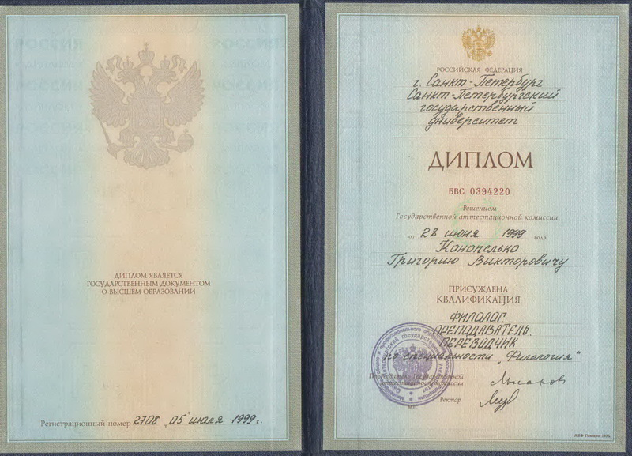
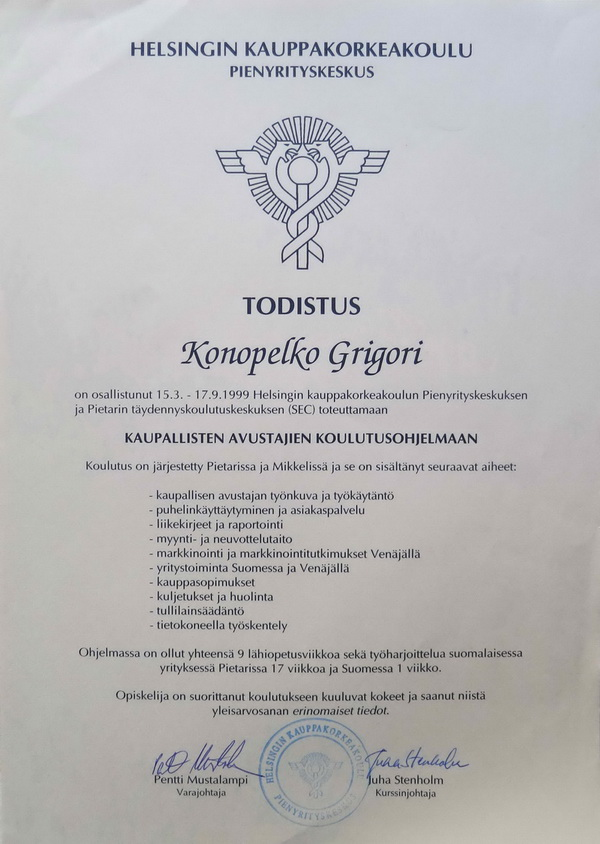

Переводчик финского языка в Санкт-Петербурге - Григорий Конопелько
Живу в Санкт-Петербурге, работаю по всей России и Финляндии.
- Работаю устным и письменным переводчиком финского с 1999 г, в своей переводческой фирме "Бюро переводов Григория Конопелько" с 2012 г.
- Большой опыт устных переводов на различных мероприятиях, в том числе, во время официальных визитов.
- Более чем 20 летний опыт письменных переводов в различных областях, владение специальной терминологией.
- Дипломированный переводчик - возможность заверения письменных переводов у любого нотариуса и возможность работать официальным/присяжным устным переводчиком.
- Знание финского менталитета.
- Образование:
- Санкт-Петербургский государственный университет, Филологический факультет, Кафедра финно-угорской филологии; специальность: финский язык

- Хельсинский университет, Факультет гуманитарных наук, Кафедра финского языка и литературы, обучение по студенческому обмену
- Хельсинская высшая школа экономики, Центр малого бизнеса, Программа подготовки торговых помощников №11
